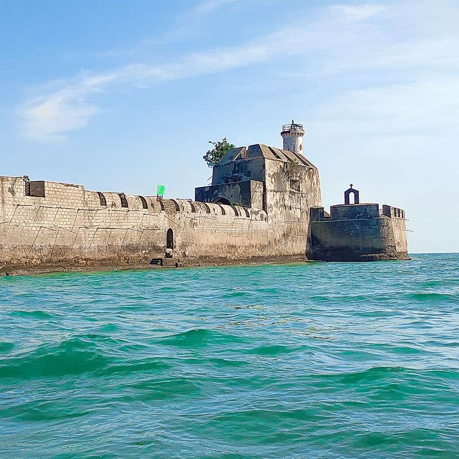
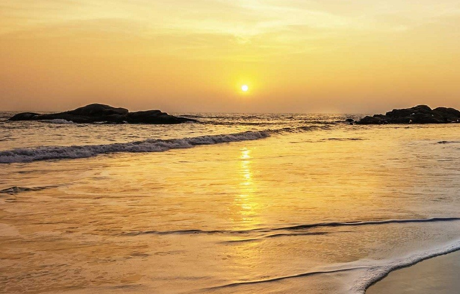
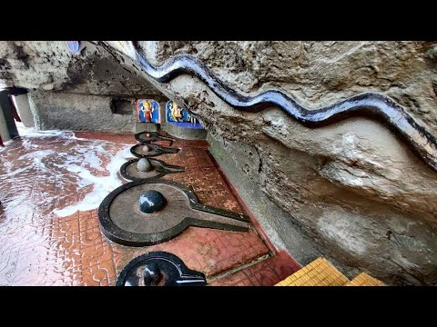
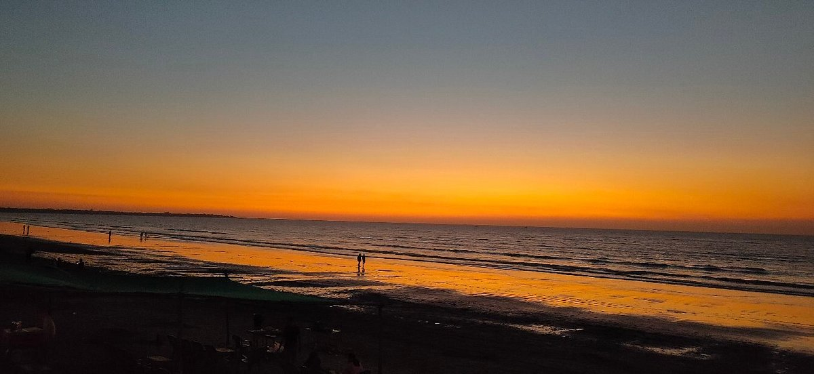
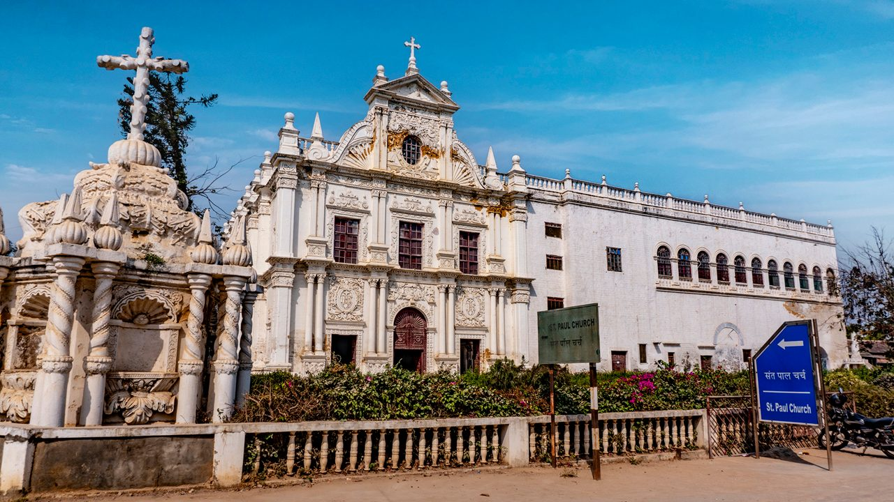
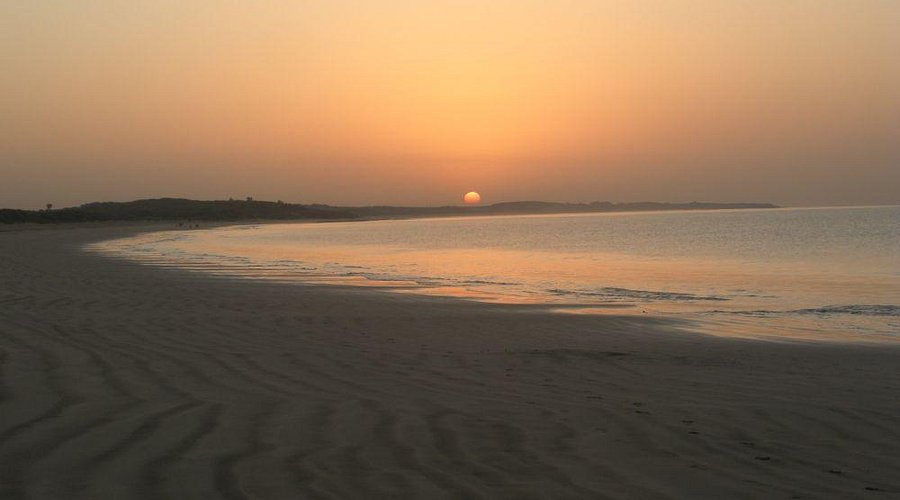

Diu Fort: A Coastal Marvel
Diu Fort is a historical fort that offers stunning views of the Arabian Sea and showcases Portuguese architecture.
Fun Fact:
~It was built in the 16th century and played a significant role in maritime defense!
Things to Explore at Diu Fort:
-
Scenic Views:
Enjoy breathtaking views of the sea and coastline from the fort walls!
-
Historical Significance:
Learn about the fort’s history and its role in maritime defense!
-
Architecture:
Admire the unique blend of Portuguese and Indian architectural styles!
-
Photography:
Capture stunning photographs of the fort and its surroundings!
-
Cultural Experience:
Experience the rich cultural heritage of Diu through guided tours!
Why Visit Diu Fort?
!Because it’s a perfect blend of history, architecture, and natural beauty, offering a unique experience!

Nagoa Beach: A Serene Escape
Nagoa Beach is a tranquil beach known for its golden sands and clear waters, perfect for relaxation and water sports.
Fun Fact:
~It’s one of the most popular beaches in Diu, attracting tourists from all over!
Things to Explore at Nagoa Beach:
-
Water Sports:
Enjoy various water sports like jet skiing, parasailing, and banana boat rides!
-
Relaxation:
Unwind on the soft sands and soak up the sun!
-
Scenic Beauty:
Marvel at the picturesque views of the Arabian Sea!
-
Local Cuisine:
Savor delicious seafood and local delicacies at beach shacks!
-
Photography:
Capture stunning photographs of the beach and sunset views!
Why Visit Nagoa Beach?
!Because it’s a serene escape that offers a perfect blend of relaxation and adventure!

Gangeshwar Temple: A Spiritual Retreat
Gangeshwar Temple is a sacred temple dedicated to Lord Shiva, known for its unique rock formations and spiritual ambiance.
Fun Fact:
~It’s believed that the temple was built by the Pandavas during their exile!
Things to Explore at Gangeshwar Temple:
-
Spiritual Experience:
Participate in rituals and prayers at the temple!
-
Rock Formations:
Admire the unique rock formations that surround the temple!
-
Scenic Views:
Enjoy the serene views of the Arabian Sea from the temple premises!
-
Cultural Heritage:
Learn about the rich cultural heritage associated with the temple!
-
Photography:
Capture stunning photographs of the temple and its surroundings!
Why Visit Gangeshwar Temple?
!Because it’s a spiritual retreat that offers a unique blend of history, culture, and natural beauty!

Jampore Beach: A Hidden Gem
Jampore Beach is a lesser-known beach that offers a peaceful atmosphere, ideal for a quiet getaway.
Fun Fact:
~It’s known for its calm waters and is perfect for swimming and sunbathing!
Things to Explore at Jampore Beach:
-
Swimming:
Enjoy a refreshing swim in the calm waters of the beach!
-
Sunbathing:
Relax on the soft sands and soak up the sun!
-
Local Cuisine:
Savor delicious local dishes at nearby shacks!
-
Scenic Beauty:
Marvel at the natural beauty and tranquility of the beach!
-
Photography:
Capture stunning photographs of the beach and its surroundings!
Why Visit Jampore Beach?
!Because it’s a hidden gem that offers a peaceful escape from the hustle and bustle of city life!

St. Paul Church: A Historical Marvel
St. Paul Church is a beautiful church known for its stunning architecture and historical significance.
Fun Fact:
~It’s one of the oldest churches in Diu, built in the 17th century!
Things to Explore at St. Paul Church:
-
Architectural Beauty:
Admire the intricate carvings and stunning architecture of the church!
-
Historical Significance:
Learn about the history and significance of the church in Diu!
-
Spiritual Experience:
Participate in mass and prayers at the church!
-
Photography:
Capture stunning photographs of the church and its surroundings!
-
Cultural Heritage:
Experience the rich cultural heritage associated with the church!
Why Visit St. Paul Church?
!Because it’s a historical marvel that offers a unique blend of spirituality, culture, and architecture!
Diu Museum: A Cultural Journey
Diu Museum is a fascinating museum that showcases the rich history and culture of Diu through various artifacts and exhibits.
Fun Fact:
~It’s housed in a former church and features a collection of sculptures, paintings, and historical artifacts!
Things to Explore at Diu Museum:
-
Artifacts:
Explore a wide range of artifacts that depict the history and culture of Diu!
-
Exhibits:
Learn about the various exhibits that showcase the rich heritage of Diu!
-
Historical Significance:
Discover the historical significance of the museum and its collections!
-
Photography:
Capture stunning photographs of the museum and its exhibits!
-
Cultural Experience:
Experience the rich cultural heritage of Diu through guided tours!
Why Visit Diu Museum?
!Because it’s a cultural journey that offers a unique insight into the history and heritage of Diu!

Ghoghla Beach: A Tranquil Retreat
Ghoghla Beach is a serene beach known for its peaceful ambiance and natural beauty, perfect for a relaxing day out.
Fun Fact:
~It’s the largest beach in Diu, offering ample space for relaxation and leisure activities!
Things to Explore at Ghoghla Beach:
-
Relaxation:
Unwind on the soft sands and enjoy the tranquility of the beach!
-
Water Sports:
Engage in various water sports like kayaking and paddle boating!
-
Scenic Beauty:
Marvel at the picturesque views of the Arabian Sea!
-
Local Cuisine:
Savor delicious seafood and local delicacies at beach shacks!
-
Photography:
Capture stunning photographs of the beach and sunset views!
Why Visit Ghoghla Beach?
!Because it’s a tranquil retreat that offers a perfect blend of relaxation and natural beauty!